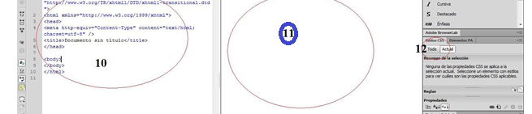
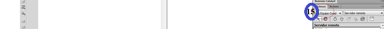

1. Barra de menús
2. Barra de aplicación
3. Conmutador del espacio de trabajo
4. Ayuda ( http://community.adobe.com/help/?l=acrobat_product_adobelr )
5. Panel de objetos
6. Pestaña de documento
7. Barra de herramienta con sus distintas vistas
8. Multipantalla, Depurar en navegador, Administración de archivos, Validación, Compatibilidad de navegadores, Ayudas Visuales, Actualizar Vista de Diseño
9. Nombre del título del documento
10. Área de Código

11. Área de diseño
12. Propiedades CSS
13. Inspector de propiedades
14. Barra de estado
15. Archivo de sincronización (Pc - servidor remoto)
